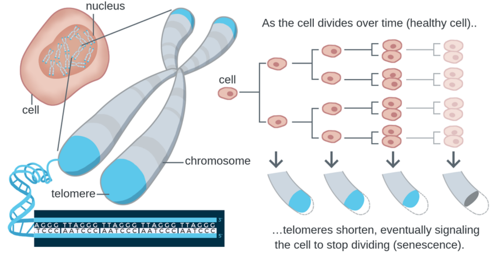

Mất kiểm soát tăng sinh và telomere
VN08 · Liên hệ kiểm soát chu kỳ · 3 trắc nghiệm và 1 tự luận
Bắt đầu học ↓Học trọn chương và làm bộ 80 trắc nghiệm, 15 tự luận
Sau buổi này
- Tách tín hiệu thúc đẩy tăng sinh, phần kiểm soát chặn và khả năng duy trì đầu NST.
- Đọc dấu hiệu tăng sinh và xâm lấn ở mức khái niệm của slide.
Gợi nhớ
Nêu một tình huống mất phanh và một tình huống tín hiệu tăng sinh bật quá lâu. Hai tình huống có thể cùng làm gì?
Học kiến thức qua hình
Quan sát hình minh họa

Hình giữ phần phóng to telomere và chuỗi tế bào chia theo thời gian.
Quan sát · So đoạn được tô ở đầu NST với sơ đồ các lần chia phía bên phải. Chỉ ra đại lượng nào đang ngắn đi trong mô hình.
Dự đoán · Nếu một nhóm tế bào giữ đầu NST lâu hơn nhóm trong hình, bạn cần so thêm điều gì trước khi kết luận về tăng sinh hay xâm lấn?
Mở giải thích sau khi dự đoán
Duy trì telomere cung cấp thông tin về đầu NST qua các lần chia. Cần dữ kiện độc lập như đáp ứng khi thiếu tín hiệu và bằng chứng xâm lấn nếu muốn hỏi về điều hòa tăng sinh hoặc di căn.
| Dữ kiện | Điều được kiểm tra |
|---|---|
| Tín hiệu vào S cao khi thiếu tín hiệu ngoại bào | Mất phụ thuộc vào tín hiệu tăng trưởng |
| Đầu NST được duy trì | Cơ chế bảo vệ đầu NST trong nhiều lần chia |
| Ổ tế bào có chung nguồn ở vị trí xa | Lan và phát triển ở mô khác |
Dữ kiện tại một mức chỉ hỗ trợ kết luận tương ứng.
Đọc hình để tự rút ra cơ chế
Quan sát · X biểu hiện telomerase; mô phỏng chưa có hình xâm lấn hay số đo kiểm soát chu kỳ.
Dự đoán · Dữ kiện cho phép kết luận X là ung thư không?
Mở giải thích sau khi dự đoán
Chưa. Dấu hiệu chỉ hỗ trợ khả năng duy trì đầu NST. Các tế bào bình thường nhất định cũng có thể biểu hiện telomerase.
Hai kiểu thay đổi điều hòa
Một proto-oncogene có thể trở thành oncogene khi biến đổi làm tín hiệu thúc đẩy tăng sinh hoạt động bất thường. Mất chức năng gene ức chế khối u có thể làm yếu cơ chế kiểm soát. Nhiều bước biến đổi có thể cùng góp phần; một chỉ dấu riêng chỉ hỗ trợ một phần lập luận.
Telomere và telomerase
Telomere là cấu trúc bảo vệ đầu NST. Trong nhiều loại tế bào, độ dài có thể giảm qua các lần phân chia. Telomerase có thể duy trì các đoạn lặp đầu NST ở một số tế bào bình thường và nhiều tế bào ung thư. Số đo telomerase riêng không đủ gán một tế bào là ung thư.
Từ tăng sinh tới di căn
Tăng số lượng tại chỗ, xâm lấn mô lân cận và hình thành ổ mới ở nơi xa là các quan sát khác nhau. Dấu hiệu tăng sinh cao giúp đặt giả thuyết, còn di căn cần bằng chứng về tế bào đến và phát triển ở vị trí xa.
Liên hệ thực tế
Trong một nghiên cứu cơ chế, đáp ứng tăng sinh, hoạt tính telomerase và bằng chứng xâm lấn phải được đọc như các đầu ra khác nhau.
Cụm bài tập
Ba dấu hiệu trên sơ đồ một mô
X có tín hiệu đi vào chu kỳ cao ngay khi thiếu kích thích. Y duy trì telomere lâu qua nhiều lần phân chia trong mô hình. Z có tế bào mang dấu vết cùng nguồn gốc ở ổ xa và ổ đó tăng kích thước. Đây là dữ liệu dạy học, không dùng để chẩn đoán.
Đối chiếu bài làm
Chọn một chỗ còn phân vân. Giải thích lại bằng lời của mình rồi thử một câu cùng dạng.